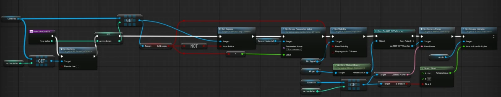
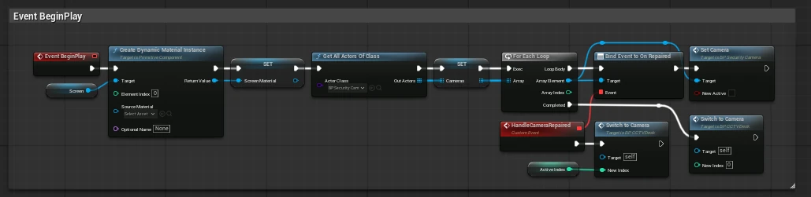
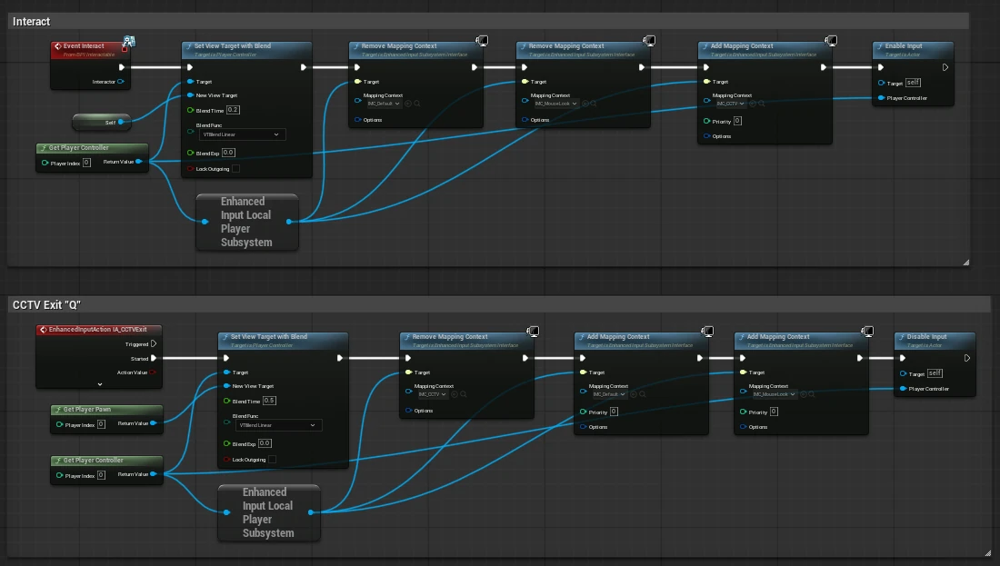
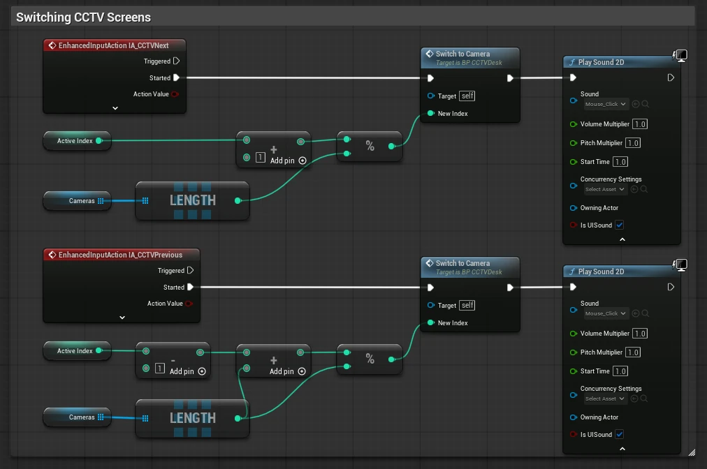
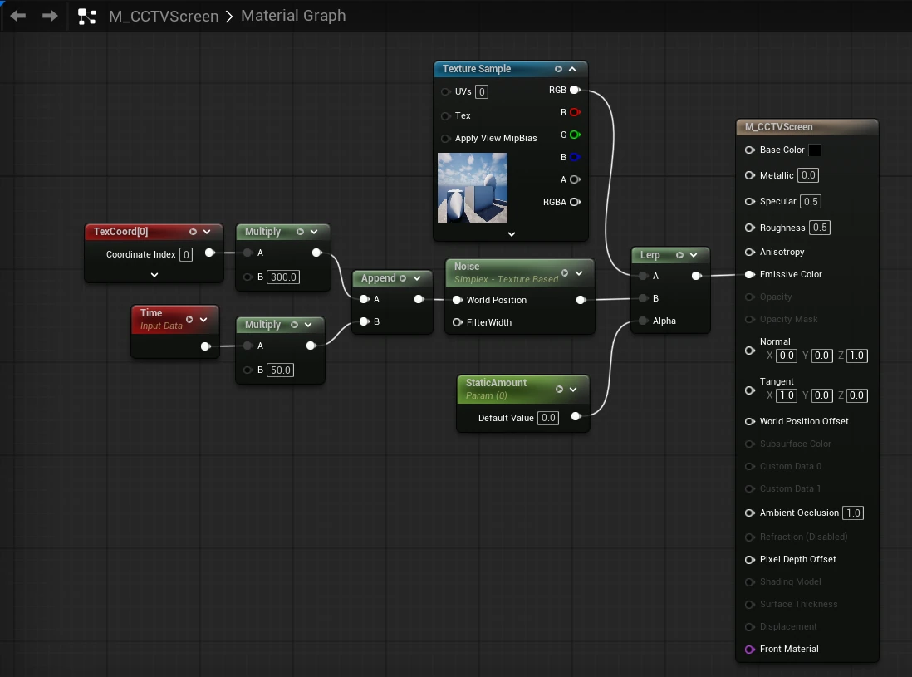
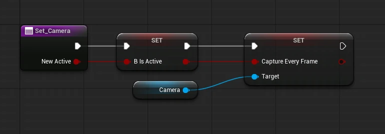

CCTV Monitoring System
A security-monitor system for a first-person horror game. The player sits at a CCTV desk, cycles through live camera feeds, and finds broken cameras showing static. They walk out, repair them, and the feed comes back live, even before they sit back down.
What I built
- Live camera feeds: four security cameras render into one shared render target through Scene Capture components. Only the active camera renders, and broken cameras skip rendering entirely, since their feed is hidden behind static anyway.
- Desk interaction: a line-trace interaction system built on a Blueprint Interface. Sitting blends the view to the monitor and swaps Enhanced Input mapping contexts, so walking and looking are disabled and the CCTV controls are enabled. Standing reverses it.
- Camera switching: cycles through the cameras in both directions with wrap-around, all through one
SwitchToCamerafunction that is the single source of truth for what's on screen. - Broken feeds: an animated static shader (noise driven by time, blended with the live feed through a Lerp) controlled at runtime with a Dynamic Material Instance, plus a NO SIGNAL warning.
- Repairs: each camera announces its repair through an Event Dispatcher. The desk subscribes to every camera at startup and refreshes the screen the moment one is fixed.
- Overlay and audio: a world-space UMG overlay on the monitor with the camera name, a live clock and a REC indicator, plus a click when switching and 3D static hiss that fades with distance.
Problems I solved
- All cameras rendering at once on startup. Plugging an array into a function's Target pin runs that function on every element. I fixed it by having the desk switch every camera off first, then turn on exactly one.
- The desk ignoring input. Actors other than the player only receive input after Enable Input, and the Enhanced Input subsystem needs an explicit Player Controller outside the pawn.
- Switching backwards broke at camera 0.
%can return negative numbers, so I used(i − 1 + n) % n. - The player could still look around while seated. The template keeps mouse-look in its own mapping context, so both contexts have to be swapped.
How I built it
Built from scratch in Blueprint over about three days, using version control with a commit at each milestone. Next: bringing this system into Second Chance, where the CCTV room is the antagonist's base.
Blueprint graphs
Select a graph to see it full size.










StaticAmount.
